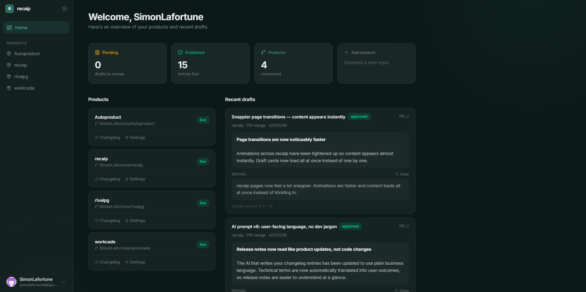
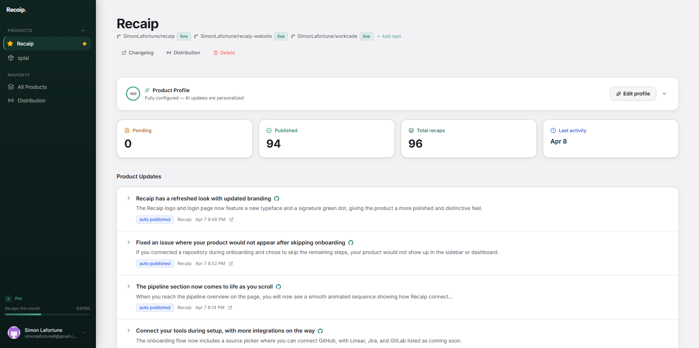
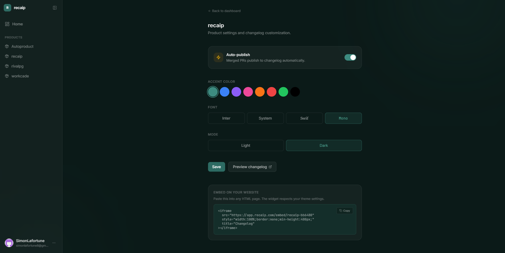

From code to every channel, automatically
Recaip listens to your dev tools, writes the update, and publishes it everywhere your users are.
Intake
AI Agent
AI Agent
Distribution
What is Recaip?
An autonomous agent that writes your product updates.
Recaip is an AI-powered tool that automatically generates release notes, changelogs, and product updates every time you ship code. It connects to your GitHub, Linear, or Jira, reads the code diff and linked tickets, and writes publish-ready recaps in six formats: changelog entry, social post, email draft, in-app announcement, stakeholder digest, and status page update.
Designed for CTO-founders at startups, solo developers, and product managers. $19/mo for unlimited products and 100 recaps. Unlike traditional changelog tools, Recaip operates as an autonomous agent that runs 24/7 without being prompted.
Output formats per event
Changelog, social post, email, in-app, stakeholder digest, status page — all from one webhook.
Minutes of manual work
After a 2-minute setup, Recaip runs fully autonomously. You never need to open it again.
Always listening
Merge a PR at 3am on a Sunday. Recaip detects it, writes the recap, and publishes it. No human required.
The problem
You ship every day.
Your users have no idea.
60% of users never discover new features. Release notes fall between roles. Nobody owns it. Recaip does.
"I shipped 40 features. My customers know about 3."
You invest weeks building features. But if nobody knows they exist, the ROI is cut in half. Support fields "where's my feature?" tickets for things you already shipped. Users churn over problems you already solved.
Recaip listens to every merge and ticket close via webhooks. It drafts a changelog entry, social post, email, and in-app announcement automatically. With auto-publish on, it goes live without you doing anything.
"Changelogs are always last on my list."
Go back through PRs. Skim commits. Understand intent. Decide what matters. Rewrite for a non-technical audience. Every. Single. Release. Most teams just skip it. 11% of dev work hours go to documentation nobody wants to write.
You never write a word. Recaip reads code diffs, PR descriptions, and linked tickets, then generates publish-ready recaps in seconds. Enable auto-publish and it handles the entire pipeline, from webhook to published update.
"Release notes fall between roles. No one owns it."
It's not the dev's job. Not the PM's job (if there even is one). Not marketing's job. So nobody does it. Support discovers breaking changes through customer tickets. Engineering ships meaningful work that goes unacknowledged.
Recaip fills the role permanently. It runs 24/7, drafts without being asked, flags breaking changes, and sends a weekly stakeholder digest. Once configured, it operates fully autonomously. No prompts, no reminders, no human in the loop.
How it works
2 minutes of setup. Then Recaip runs forever, without you.
Connect your tools
Sign in. Connect your repo or project board. Recaip registers a webhook and starts listening. Done in 2 minutes.
Ship like you always do
Merge a PR at 3am. Close a ticket on Friday. Recaip detects it instantly, reads the context, and drafts every output format. You do nothing.
Flip to autopilot. Walk away.
Start by reviewing drafts. Once you trust the output, enable auto-publish. Recaip writes, publishes, and delivers to every channel on its own. You never need to open it again.
From webhook to published update
Recaip detects the event, reads the context, writes every format, and publishes. In seconds. Fully autonomous.
# PR #247
fix: update stripe webhook
handler to retry on 5xx
+ add idempotency key check
+ update error logging format
3 files changed, 47 insertionsChangelog
Payment processing is now more reliable. Failed webhook deliveries will automatically retry, and duplicate payments are prevented.
Social Post
Shipped: payment webhooks now auto-retry on failures. No more missed events.
Live product
See it in action
Recaip runs on itself with auto-publish enabled. Every entry on our changelog was generated and published autonomously. No human reviewed or approved it.
Dashboard

Draft review

Changelog settings

One event. Every channel. Automatic.
A single webhook triggers six output formats. Each is written, formatted, and delivered to its channel without any action from you.
Changelog page
Beautiful hosted changelog at recaip.com/you. Auto-updated on every release. Embeddable in your app with a single iframe.
Social post
LinkedIn & X-ready post, written in your voice. Build in public with one click. Copy and ship.
In-app announcement
Short, action-oriented banner copy. Ready to paste.
Email draft
User-facing email template. Copy into your email tool.
Stakeholder digest
Weekly summary for your CEO or investors.
Status page update
Push to Statuspal, Betterstack, or Instatus.
Not a tool. An always-on agent.
Other tools help you write changelogs faster. Recaip eliminates the task entirely. It listens, writes, publishes, and delivers. You configure it once and it runs forever.
Diff-aware AI generation
Recaip reads actual code diffs, PR descriptions, and linked tickets. Not just commit messages . it understands what you built and why.
Trust ladder: approve → autopilot
Start by reviewing every draft. As Recaip learns your voice, flip channels to auto-publish one by one. Low-stakes channels first, full autopilot eventually.
Multi-format output
One merge → six formats. Each tailored for its audience.
Breaking change detection
AI flags breaking changes and auto-adds warnings to drafts.
Weekly stakeholder digest
Auto-assembled summary sent to your CEO, investors, or support lead.
Learns your tone
Every edit teaches Recaip your voice. It adapts until drafts need zero edits.
Batch catch-up mode
Missed a month? Scan all merged PRs and generate a catch-up digest.
2 minutes to first draft
No config, no templates. Sign in, select repo, get your first recap.
One plan. Everything included.
Unlimited products. 100 recaps/mo. No tiers, no feature gates, no surprises.
Unlimited products. 100 recaps per month. Stack packs for more.
Need more than 100 recaps? Stack packs at $19/mo each. 5 packs = 500 recaps/mo.
The old way vs. Recaip
See what changes when release communication runs on autopilot.
Go back through merged PRs manually
Skim commit messages and diffs
Write changelog for technical audience
Rewrite for email, social, in-app
Copy-paste into 4 different tools
Send stakeholder update separately
~60 min per release. Often skipped.
Merge your PR like you always do
Recaip detects the event instantly
AI reads diffs, tickets, and context
6 formats generated and published
Stakeholder digest sent every Friday
0 min per release. Never skipped.
Frequently asked questions
Recaip costs $19 per month for unlimited products and 100 recaps. Need more? Stack additional packs at $19 each for 100 more recaps.
GitHub is fully supported today. Linear and Jira integrations are in development. Slack delivery, GitLab, Notion, Statuspal, Betterstack, and Instatus are on the roadmap.
Most changelog tools help you write faster. Recaip eliminates writing entirely. It is an autonomous agent that listens to webhooks 24/7, reads your code diffs, and publishes to every channel without any human action. You configure it once and never need to open it again.
Yes. You can connect multiple repositories to a single product, or set up multiple products from different paths in the same repo. All events feed into the appropriate changelog.
Recaip uses Claude by Anthropic. It reads code diffs, PR descriptions, and linked tickets to generate each draft. Over time it learns your writing style from edits you make.
Stop writing changelogs.
Start shipping.
2 minutes to set up. Then it runs on its own, forever.
$19/mo. Unlimited products. 100 recaps included.